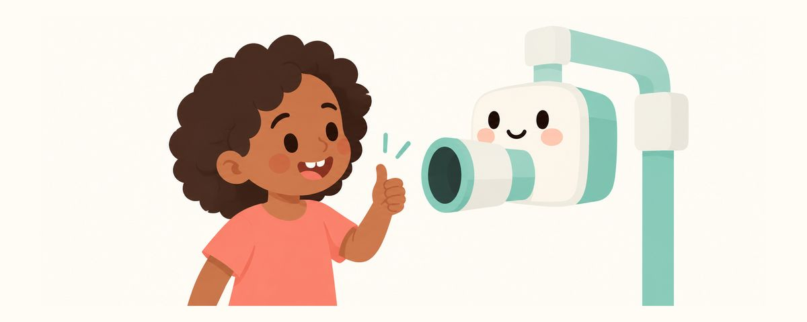

牙科X光片对孩子安全吗？辐射剂量和铅围裙建议的变化
牙科X光片的辐射量非常小，不拍必要的片子反而可能漏掉蛀牙。这里整理了为什么要拍、铅围裙的建议为什么改了，以及家长可以问的问题。
要点速览
- 口腔内的小X光片辐射量非常小
- 关于铅围裙的建议在2024年改了
- 可以问问为什么需要拍片
在牙科听到“我们拍张片子看看”，家长首先担心的往往是孩子受辐射有没有关系。以前一定要穿的铅围裙，现在有的牙科不穿了，就更让人困惑。这篇文章整理了牙科X光片为什么需要、有多安全，以及可以问些什么。
牙科X光片的剂量有多小，为什么要拍
我们平时就一直在接受来自地面、空气和食物的少量天然辐射。放进嘴里拍的一张小X光片，1张的辐射量非常小。即使是一次拍下整个颌骨的全景片，也只相当于几天的天然辐射。
不过，孩子比大人对辐射更敏感。所以现在的指南强调：只拍真正需要的片子，并使用最低剂量。X光片不是按时间表定期做的检查，而是用于诊断的工具。不会只看年龄就拍；如果有以前拍的片子，会先利用起来。
需要拍X光片，是因为有些地方用眼睛看不到：紧紧挨着的磨牙之间、在牙齿内部蔓延的蛀牙、还在牙龈里的恒牙，从外面都看不见。不拍必要的片子，就可能漏掉这些蛀牙，导致之后需要更大的治疗。
关于铅围裙的建议，最近改了。过去拍牙科X光片时，一定要穿铅围裙、戴甲状腺防护围领。继美国口腔颌面放射学会2023年的建议之后，美国牙科协会在2024年宣布，不再建议包括儿童和孕妇在内的任何患者使用。美国儿童牙科学会也在2025年采纳了这一建议。理由有三个：
- 数字传感器和缩小射线范围的设备，已经大大降低了辐射量。
- 防护用品挡不住在身体内部散射的辐射。
- 防护用品反而可能遮挡影像，导致需要重拍。
拍片时，这样问、这样帮忙
有疑问尽管问，提问并不失礼。
- “为什么需要拍这张片子？”
- “能用以前拍的片子吗？”如果在别的牙科拍过，请提前告诉牙医。
- 如果被建议拍3D扫描（CBCT），可以问：“为什么普通片子不够？”
- 如果拍片时需要家长扶着孩子，确认一下家长是否需要防护用品。
对孩子，可以简短平静地解释：“这个相机要给牙齿拍照，只要一会儿不动就好。”孩子咬住嘴里的传感器时可能会觉得陌生，但很快就结束了。不乱动，就能减少重拍。
常见问题
每次检查都要拍X光片吗？
不是。看磨牙之间蛀牙的咬翼片，多久拍一次取决于蛀牙风险。一般来说，高风险每6–12个月一次，低风险每12–24个月一次。
几岁开始拍X光片？
没有固定的年龄。不会只看年龄就拍，而是在磨牙之间挨在一起看不到、或者怀疑有蛀牙等需要确认的时候，由牙医决定。
不给孩子穿铅围裙，真的没关系吗？
按照最新的指南，不需要常规穿戴。有的牙科仍会使用，也可能是在遵守规定，无论哪种，听从牙科的安排就好。
担心辐射，可以拒绝拍片吗？
拒绝必要的拍片，可能会漏掉看不见的蛀牙。与其拒绝，不如问问为什么需要、现在是否一定要拍，再和牙医一起决定。
我正在怀孕，孩子拍片时可以在旁边吗？
请提前告诉牙医您怀孕了，再商量是否需要您扶着孩子、是否需要防护用品，以及能否由其他家人代替。
这些情况请和牙医商量
- 被建议拍片，想知道原因时
- 被建议拍3D扫描（CBCT）时
- 最近在别的牙科拍过片子时
- 磨牙之间经常塞食物，或者嚼东西时会疼时
- 摔倒或磕碰伤到牙齿时
在合适的时候收到提醒
在牙齿日历应用中输入孩子的出生日期（或预产期），这些文章就会在需要的时候以提醒的形式送达。免费使用，无需注册。
参考来源
本应用中的信息仅供一般科普教育之用，不能替代专业的牙科诊疗。关于孩子的具体情况，请咨询牙医。